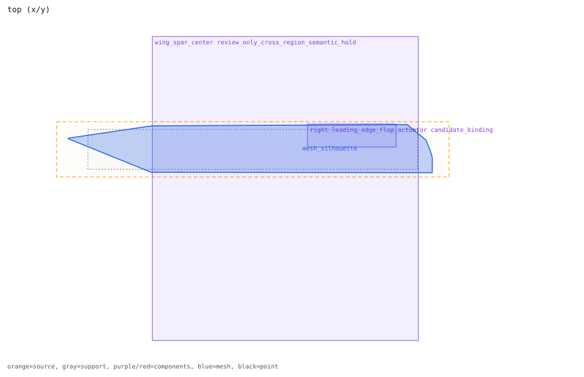
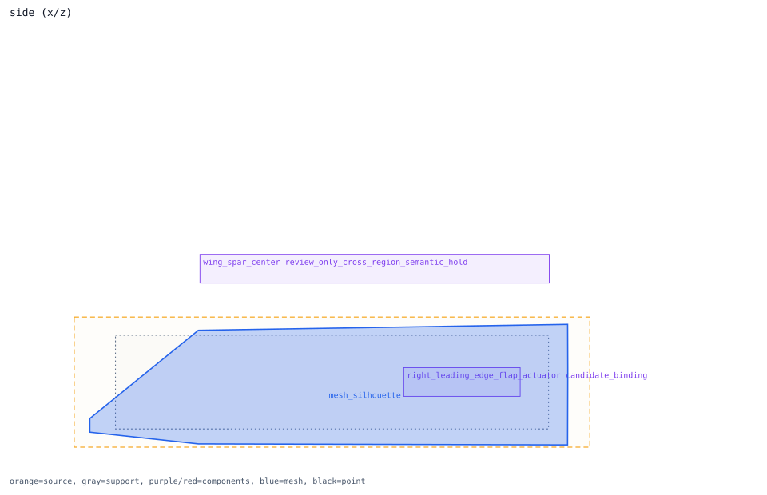
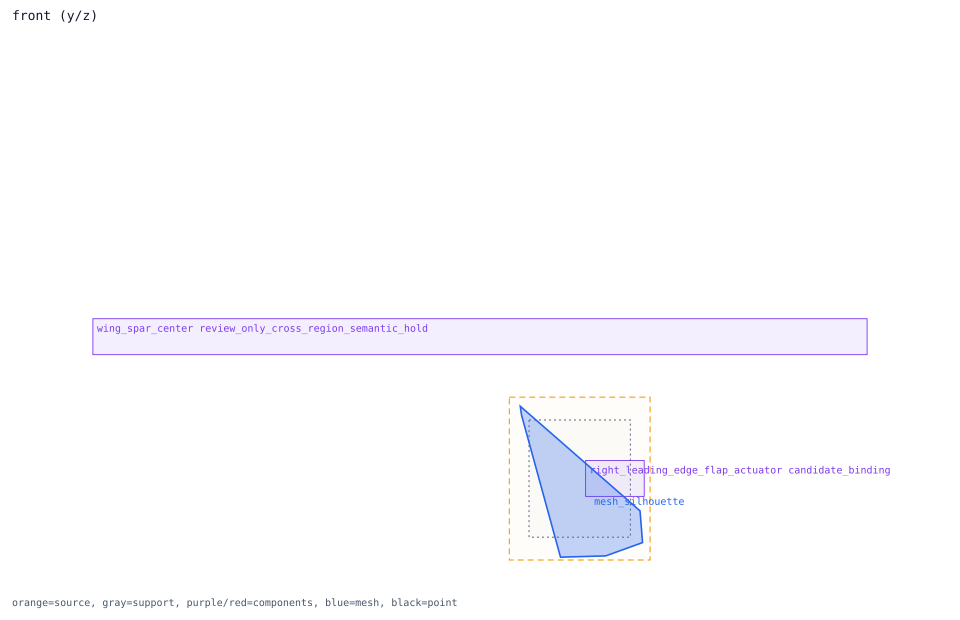

semantic_right_wing_root_fairing_volume
semantic volume -> right_wing_root
Review question
Can semantic_right_wing_root_fairing_volume be promoted from mesh-proxy candidate to an active damage component?
Look at
Compare the blue mesh silhouette/support volume with the linked receiver component boxes in all three views.
Decision needed
Keep cross-region receivers held or split them before runtime activation.
Trace Details
- semantic component: semantic_right_wing_root_fairing_volume
- surface component: surface_right_wing_root_fairing
- outer region: right_wing_root
- volume role: right_wing_root_fairing_volume
- geometry primitive: convex_hull
- runtime system candidate: wing_root_fairing
- direct receivers: right_leading_edge_flap_actuator
- cross-region receivers: wing_spar_center
- receiver handoff: direct_receivers_parse_ready_cross_region_receivers_held
- runtime projection: runtime_schema_parse_ready_candidate_not_activated
- mesh region vertices: 180
- surface review semantics: cross_region_semantic_hold


